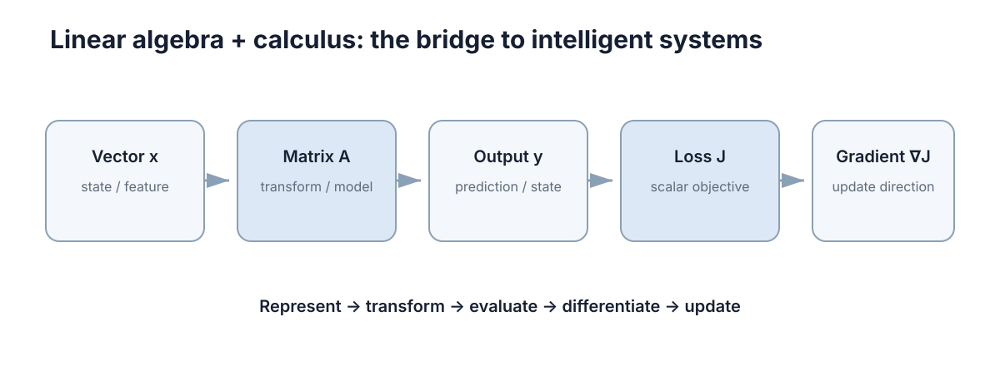

Linear Algebra & Calculus
线性代数回答“状态在哪里、映射把状态变成什么”，微积分回答“输入或参数改变一点点，输出会变化多少”；两者的交汇点就是局部线性化。
后面的控制理论、机器人学、SLAM、优化和强化学习，几乎都在重复使用同一套工具：用向量表示系统状态，用矩阵表示状态之间的线性关系，用导数和 Jacobian 表示非线性模型在工作点附近的近似。这一章不追求课程式的完备证明，而是把三件事讲清楚——变量是什么、维度对不对、误差往哪个方向放大。读的时候建议随时问自己一句：眼前这个对象是标量、向量，还是一个映射？维度判断对了，绝大多数公式错误会在写下来的那一刻暴露；判断错了，公式看起来处处合理，代入数值却处处不对。

向量与系统状态
状态空间模型的形式化写法是 \(\dot x=f(x,u)\) 或 \(x_{k+1}=f(x_k,u_k)\)，其中 \(x\) 是状态、\(u\) 是输入。判断“哪些量该进状态”有一条硬标准：状态必须是预测未来所需的充分信息——给定当前状态和未来输入，未来状态与观测的条件分布不应再依赖更早的历史。若某个量能由状态与输入唯一确定（例如平面小车的速度是位置导数），把它塞进状态只会带来冗余，让协方差矩阵出现零特征值而不再正定，滤波器随后会在这些冗余方向上产生伪相关。
另一个常被忽略的问题是单位与坐标原点的选择。把位置从绝对坐标改为相对某个参考点的坐标，可以把数值尺度从 \(10^{5}\) 降到 \(10^{1}\)，条件数与浮点精度都会明显改善；把角度的参考轴选在运动主方向上，可以避免 \(\theta\approx\pi\) 附近的角度环绕跳变被误判成剧烈运动。这些选择不影响物理，却直接决定同一套算法是否稳定，属于“建模阶段就能省掉调试时间”的投入。
系统状态是一组必须同时知道才能预测未来的量。差分驱动小车的平面状态可以写成位置、速度与航向的列向量：
其中 \(p_x,p_y\) 是位置（单位 m）、\(v\) 是线速度（m/s）、\(\theta\) 是航向角（rad）。之所以把它们组织成一个向量，而不是当作四个互不相干的标量，是因为向量自带结构：可以做加法（叠加位移）、可以做数乘（缩放速率）、可以做内积（度量投影长度），也可以用一次矩阵乘法同时作用在所有分量上。
范数是“这个状态离原点多远、误差有多大”的度量，不同范数强调不同的误差形态，选错范数会直接改变最优解的性质：
| 范数 | 定义 | 强调什么 | 机器人中的典型用途 | 失效情形 |
|---|---|---|---|---|
| \(L_1\) | \(\|x\|_1=\sum_i \|x_i\|\) | 分量绝对值之和 | 稀疏残差、鲁棒估计损失项 | 对小误差不平滑，梯度不稳 |
| \(L_2\) | \(\|x\|_2=\sqrt{x^\top x}\) | 欧氏距离，对大误差惩罚重 | 位姿误差、最小二乘目标 | 单个离群点主导结果 |
| \(L_\infty\) | \(\|x\|_\infty=\max_i \|x_i\|\) | 只看最坏分量 | 安全约束“不得超过” | 忽略其余分量的累积偏差 |
二范数可以展开成 \(\|x\|_2^2=x^\top x=\sum_i x_i^2\)。这个平方形式值得单独记住：最小二乘之所以叫“二乘”，就是因为目标函数写成误差向量的二范数平方，它是二次函数，求导后得到线性方程，因此有闭式解；换成 \(L_1\) 就变成线性规划，换成 \(L_\infty\) 变成切比雪夫逼近。范数的选择本质上决定了“我更怕一个巨大的误差，还是更怕很多个小误差”。
维度与转置约定必须在动笔前定好：本区统一使用列向量，于是内积写作 \(x^\top y\)（结果是标量），外积写作 \(xy^\top\)（结果是矩阵）。一个 \(n\) 维状态若被当作行向量，矩阵乘法处处需要转置，写出的公式看似对称、代入就不对齐。另一个常见障碍是单位混装：位置用 m、角度用 rad、速度用 m/s，量级可能相差几个数量级，这会让梯度下降在某些方向上前进得极慢；这类尺度问题的定量处理见 数值计算。
矩阵、映射与坐标变换
同一个线性映射在不同基下的矩阵不同，这正是“矩阵表示映射、但映射不等同于矩阵”的含义。相似变换 \(A'=P^{-1}AP\) 描述的正是同一映射在两组基下的表示，其特征值不变——这条性质在实践中很实用：判断“两个矩阵是否描述同一个物理系统”，比较特征值比逐个比较元素快得多。对角化 \(A=Q\Lambda Q^\top\) 的价值也在于此，它把映射拆成“转到特征坐标系、各轴独立缩放、再转回来”三步，每步都廉价且可解释。
还需要区分线性与仿射：\(y=Ax+b\) 在数学上不是线性映射（除非 \(b=0\)），但机器人里的坐标变换绝大多数是仿射。工程上的标准处理是齐次坐标——把 \(n\) 维点补成 \(n+1\) 维、最后一维固定为 1，于是旋转与平移可以合并成单个矩阵乘法，多个变换的复合依然只是矩阵连乘。代价是这类矩阵的逆有专门形式（平移项需要按 \(R^\top\) 反向修正），当 \(R\) 只是正交矩阵时逆才简洁，套用通用求逆的直觉容易写错符号。
矩阵不是数字表格，而是线性映射在给定基下的表示。若 \(y=Ax\) 且 \(A\in\mathbb R^{m\times n}\)，则 \(A\) 把输入空间 \(\mathbb R^n\) 中的向量送进输出空间 \(\mathbb R^m\)：\(m<n\) 时信息被压缩（降维、投影），\(m>n\) 时输入被嵌入更高维空间，\(m=n\) 时可逆当且仅当 \(A\) 满秩。
列的解释很关键：\(A\) 的第 \(j\) 列就是输入基向量 \(e_j\) 的像，所以“矩阵怎么变换空间”等价于“每一列的像落在哪里”。秩则是这些列的独立方向数；零空间 \(\ker A\) 由全部被映射为零的输入组成，因此零空间非平凡意味着存在某些状态变化在当前观测下完全不可见——这是可观性分析的雏形。
| 映射类型 | 矩阵形式 | 几何效果 | 出现场景 |
|---|---|---|---|
| 旋转 | \(R^\top R=I,\ \det R=1\) | 保长度、保角度，改变朝向 | 刚体姿态、坐标系对齐 |
| 反射 | \(R^\top R=I,\ \det R=-1\) | 保长度，翻转手性 | 镜像相机模型（少见，需谨慎） |
| 缩放 | \(\operatorname{diag}(s_1,\dots,s_n)\) | 各轴独立拉伸，$\kappa=\max | s_i |
| 投影 | \(P^2=P,\ P^\top=P\) | 压扁到低维子空间，不可逆 | 最小二乘、平面约束 |
| 状态转移 | \(x_{k+1}=A x_k\) | 时间上的一步推演 | 线性系统离散化 |
矩阵乘法一般不可交换：\(AB\ne BA\)。这不是形式上的怪癖，而是几何事实——“先旋转再平移”和“先平移再旋转”得到不同结果。机器人里的复合变换必须严格按右到左的作用顺序书写，即 \(T_{world\leftarrow body}=T_{world\leftarrow base}T_{base\leftarrow body}\) 这类链式结构，位置与朝向的顺序一旦对调，同一条关节轨迹会让末端点落在完全不同的位置。实践建议：给每个变换显式写出“从哪个坐标系到哪个坐标系”的下标，而不是用 \(T_1,T_2\) 之类的编号，编号法在三个以上坐标系串联时几乎必然出错。
线性方程与最小二乘
一个纯几何的诊断方法：正规方程的条件数由 \(A\) 的列向量夹角决定。若两列几乎平行、夹角 \(\phi\to0\)，这两个方向上的参数几乎无法区分，\(\kappa\) 大约按 \(1/\sin\phi\) 的量级放大。这条关系解释了标定实验为何必须让激励覆盖多个方向——只在一个方向上采集数据，列向量必然近似共线，解出的参数虽有一组数值，但它们的和可信、各自的分量却带有巨大不确定度。
由此得到实验设计的准则：让观测的几何分布尽可能“张开”。标定与系统辨识要求输入信号覆盖关心的频率范围与运动方向；SLAM 要求机器人不能只沿直线前进，否则沿运动方向与垂直方向的不确定度会相差几个数量级，回环与横向约束的价值正体现在这里。若实验已经做完才发现几何退化，唯一的路是加先验约束或正则项，而不是继续采集同一方向的数据。
把未知量记为 \(x\)，观测记为 \(b\)，物理约束或观测模型常被整理成 \(Ax=b\)。与其笼统说“解方程”，不如分三种情形讨论，因为它们的处理方法完全不同：
| 情形 | 条件 | 解的结构 | 工程含义 |
|---|---|---|---|
| 唯一解 | \(A\) 方阵且 \(\det A\ne0\) | \(x=A^{-1}b\) | 约束恰好定解，如标定方程 |
| 欠定 | 未知量多于独立方程 | 解集是仿射子空间 | 冗余自由度，需加正则项选一个解 |
| 超定 | 方程多于未知量 | 一般无精确解 | 带噪观测，转最小二乘 |
| 数值奇异 | \(\det A\approx0\) 但非零 | 形式上有唯一解 | 解对扰动极敏感，须看条件数 |
当观测多于未知量、每条观测又带噪声时，进入最小二乘：
对 \(x\) 求导并令其为零，得到正规方程 \(A^\top A x=A^\top b\)，也就是最优性条件 \(A^\top(Ax-b)=0\)。第二个写法提示了几何含义：最优残差 \(r=Ax^\star-b\) 与 \(A^\top\) 相乘为零，说明残差和 \(A\) 的所有列都正交，也就是残差垂直于 \(A\) 的列空间，不是巧合，而是“投影”的定义。
要留意的失败模式有两个。第一，直接构造 \(A^\top A\) 会把条件数平方，\(\kappa(A^\top A)=\kappa(A)^2\)；若 \(A\) 已经接近奇异，正规方程会先一步失去精度，实用替代是 QR 分解或 SVD，代价相近但数值表现更稳。第二，把“残差最小”当成“模型正确”：残差小只说明在平方误差意义下最接近数据，若模型本身漏掉了某个物理效应，残差里会残留结构（例如随时间单调偏移），此时继续优化权重是在拟合错误的模型。
正交性与投影
投影的实用实现不需要构造 \(P\)，而是走 QR 分解：把 \(A\) 分解为 \(A=QR\)，其中 \(Q\) 的列标准正交、\(R\) 为上三角，最小二乘解满足 \(Rx=Q^\top b\)，用回代即可求得。这条路径避免构造 \(A^\top A\)（后者会把条件数平方），代价只是分解的常数因子，是数值上最稳的常规选择。当 \(A\) 秩亏时，改为列主元 QR 或 SVD，得到最小范数解。
正交化的直觉来自 Gram–Schmidt 过程：把第 \(k\) 列减去它在前面所有列张成子空间上的投影，剩下的就是新增的独立方向，再归一化。\(n\) 列的几何信息因此被整理成一组互相垂直的坐标轴，这正是“投影到列空间”可以被逐列执行的原因。工程实现中更常用 Householder 或 Givens 变换代替 Gram–Schmidt，因为后者在列接近平行时误差会被反复放大。
最小二乘的几何解释只有一句话：把观测向量投影到 \(A\) 的列空间，投影点就是最优拟合，残差就是被丢弃的正交分量。 先定义内积与正交：\(u^\top v=0\) 称为正交；若还有 \(\|u\|_2=\|v\|_2=1\)，则称标准正交。标准正交矩阵 \(U\)（满足 \(U^\top U=I\)）的关键性质是它做变换不改变长度，\(\|Ux\|_2^2=x^\top U^\top Ux=\|x\|_2^2\)，所以旋转和坐标变换不会放大误差。
投影矩阵由列空间的一组标准正交基给出，并满足幂等性：
幂等性说明投影两次等于投影一次，这正是“已经落在子空间里就再也不被改动”的代数表达；第二个恒等式说明“子空间内部分”与“垂直部分”彼此正交，因此任意向量都能唯一分解为 \(b=Pb+(I-P)b\)，两块满足勾股关系 \(\|b\|_2^2=\|Pb\|_2^2+\|(I-P)b\|_2^2\)。
用一个三维例子把直觉钉住：取 \(u_1=(1,0,0)^\top\)、\(u_2=(0,1,0)^\top\)，它们张成 \(xy\) 平面。对 \(b=(1,2,3)^\top\) 做投影，
残差 \(r=(0,0,3)^\top\)，长度 3，恰好等于 \(b\) 到该平面的垂直距离。把它搬到估计问题里：列空间是“模型能解释的全部方向”，投影是这个方向上最接近数据的那一点，残差是模型永远解释不了的部分。
| 概念 | 代数对象 | 判据 | 常见误用 |
|---|---|---|---|
| 正交 | \(u^\top v=0\) | 内积为零 | 把“正交”当成“独立” |
| 标准正交基 | \(U^\top U=I\) | 列互相正交且单位长 | 忘记归一化导致投影尺度错 |
| 投影 | \(P=UU^\top\) | \(P^2=P\) 且 \(P^\top=P\) | 用非正交基构造 \(P\)，结果不可投影 |
| 残差 | \(r=b-Pb\) | \(U^\top r=0\) | 只看 \(\|r\|\) 不看残差结构 |
投影还给出两个可直接用的工程结论。其一是“加更多观测量一定不会让最小二乘变差”：列空间变大，\(b\) 到它的距离单调不增，这就是多传感融合的几何理由。其二是“正交分解保证能量守恒”，因此残差的平方和与拟合值的平方和相加等于数据总平方和，这也是回归中 \(R^2\) 的定义来源。
为什么工程上不做显式求逆
初学时习惯把 \(x=A^{-1}b\) 当作解方程的标准答案，工程实现里却几乎不这么写。原因有三层，一层比一层严重。
第一层是代价。求逆本身是 \(O(n^3)\) 量级的稠密运算，常数比 LU 分解大 2–3 倍，得到 \(A^{-1}\) 后还要再做一次矩阵向量乘才算出一个解。而分解求解可以复用分解结果应付多个右端项：
| 做法 | 一次性代价 | 每个新 \(b\) 的代价 | 数值误差特征 | 备注 |
|---|---|---|---|---|
| 显式求逆 | \(\approx 2n^3\) 乘加 | \(O(n^2)\) 矩阵向量乘 | 误差被放大两次，近似 \(\kappa^2\) 量级 | 应避免 |
| LU 分解求解 | \(\approx \frac{2}{3}n^3\) | \(O(n^2)\) 前后代 | 按 \(\kappa(A)\) 放大 | 通用方阵 |
| Cholesky 求解 | \(\approx \frac{1}{3}n^3\) | \(O(n^2)\) 前后代 | 对称正定时最省 | \(A^\top A+\lambda I\) 常用 |
| QR 求解 | \(O(mn^2)\) | \(O(n^2)\) | 稳定，不平方条件数 | 最小二乘首选 |
| 迭代求解 | 每步 \(O(n^2)\) | 每步 \(O(n^2)\) | 可用残差提前停止 | 稀疏大系统首选 |
以 \(n=1000\) 为例，\(n^3=10^9\)，显式求逆与 Cholesky 求解的乘加数量相差约 6 倍；若每个时间步只需要一个解，用分解直接求解几乎总是更快。若同一个矩阵需要在上万次迭代中反复使用（例如固定的预条件器），才值得考虑保存因子而非求逆。
第二层是数值。求逆会把扰动放大 \(\kappa(A)\) 倍，把求出的 \(A^{-1}\) 再乘回 \(b\) 时又放大一次，等效误差接近 \(\kappa(A)^2\) 量级。若 \(\kappa(A)=10^8\)，双精度（约 16 位有效数字）先损失 8 位，再平方后基本没有可信位数可用。
第三层是不必要。真正需要的是线性方程组的解，不是逆矩阵本身。绝大多数场景（状态估计、模型预测控制、牛顿法步长、图优化中的线性化求解）都只需要 \(A^{-1}b\) 这个动作。例外只有三类：需要矩阵的迹或需要显式协方差做解析推导、矩阵极小（\(n\le4\)）且需要在多个右端项上反复使用、以及教学或调试时想看清结构。
失败模式总结：判断某个量是否“解不动”，先看 \(\kappa(A)\) 的量级，再看残差是否已降到观测噪声水平；若残差与噪声同量级还继续迭代，只是在把噪声拟合进解里。
导数与局部敏感度
一元函数在一点的瞬时变化率定义为极限
它回答的是“把输入挪动 \(h\)，输出挪动大约 \(f'(x)h\)”，这是线性近似的原型。推广到多变量标量函数 \(f(x_1,\dots,x_n)\)，偏导数 \(\partial f/\partial x_i\) 表示“只动第 \(i\) 个输入、其它保持不动”的变化率，把它们摞起来就是梯度：
梯度的几何含义很具体：它是函数增长最快的方向，方向导数在 \(\delta\) 与 \(\nabla f\) 同向时取最大值 \(\|\nabla f\|_2\)，在垂直时为零。梯度的模长因此可以当作“当前有多陡”的指标——趋近最优解时它趋于零，这也是很多优化器把 \(\|\nabla f\|\le\varepsilon\) 当作收敛判据的原因。
| 概念 | 定义对象 | 维数 | 主要用途 | 常见误用 |
|---|---|---|---|---|
| 导数 \(f'\) | 标量→标量 | 1 | 单变量敏感度 | 直接套到多变量上 |
| 偏导 \(\partial f/\partial x_i\) | 标量→标量 | 1 | 隔离单变量作用 | 忘记其它变量被固定 |
| 梯度 \(\nabla f\) | 标量→向量 | \(n\) | 优化下降方向 | 行列约定混用 |
| 方向导数 | 标量→标量 | 1 | 沿指定方向的变化率 | 忘记先归一化方向 |
| Jacobian \(J\) | 向量→向量 | \(m\times n\) | 多变量映射线性化 | 忘记它随工作点变化 |
数值上求梯度不应该用极小步长的前向差分：\(\left(f(x+h)-f(x)\right)/h\) 的相对误差约为 \(u/h+M_2h/2\)，最优步长在 \(h\approx\sqrt{u}\approx10^{-8}\) 附近，此时相对误差也只能到 \(10^{-8}\) 量级；中心差分精度提高到 \(h^2\) 阶，最优 \(h\approx u^{1/3}\approx6\times10^{-6}\)。一旦 \(h\) 取到 \(10^{-16}\)，\(x+h\) 与 \(x\) 在浮点下已经相等，分子变成 0，导数算成 0——这是“步长越小越准”这一直觉的失效点，也是自动微分优于手工差分的根本原因。
Jacobian 与多变量映射
当输入输出都是向量时，单个导数不够用了。设 \(y=f(x)\)，\(x\in\mathbb R^n\)，\(y\in\mathbb R^m\)，Jacobian 是全部一阶偏导排成的矩阵：
维度检查是最快的自检手段：\(J\delta\) 必须是 \(m\) 维，所以 \(J\) 是 \(m\times n\)、\(\delta\) 是 \(n\) 维，乘积 \(m\times n\) 乘 \(n\times1\) 得 \(m\times1\)。写公式时先写维度，再填内容，可以省掉大量返工。
机械臂是最自然的例子。关节角 \(q\)、末端位姿 \(x\)，两者的速度关系为 \(\dot x=J(q)\,\dot q\)，其中 \(J\) 是 \(6\times n\) 的几何 Jacobian（\(n\) 为关节数）。它同时承担三种任务：正运动学的速度映射、逆运动学的求解对象、以及奇异性判断。当 \(J\) 降秩，某些末端运动方向无法由关节速度生成，机械臂在这些构型附近需要极端的关节速度才能维持末端速度，这就是奇异位形。
| 应用 | 用 \(J\) 做什么 | 关键条件 | 失效表现 |
|---|---|---|---|
| 速度正解 | \(\dot x=J\dot q\) | 无 | 无 |
| 逆运动学速度 | \(\dot q=J^{+}\dot x\) | \(J\) 满秩或加阻尼 | 奇异附近关节速度爆炸 |
| EKF 观测更新 | 线性化观测模型 \(h(x)\) | 估计点附近线性化有效 | 强非线性时发散 |
| 误差传播 | \(\Sigma_x\approx J\Sigma_q J^\top\) | 局部线性足够 | 大不确定度时低估方差 |
| 牛顿法 | 求解 \(J\Delta=\) 残差 | \(J\) 非奇异 | 奇异步长无解 |
几何理解：Jacobian 在当前构型附近，把关节空间的一个小位移映射为任务空间的切向位移，即 \(\Delta x\approx J(q)\Delta q\)。它不是一段实现技巧，而是非线性映射在局部的线性近似。必须强调“局部”二字——构型变化后 \(J(q)\) 随之改变；用旧构型算出的 Jacobian 去外推大位移，误差会随位移增大迅速失控。经验上，当线性近似误差不再小于测量噪声时，就该重新计算 Jacobian；在迭代式逆运动学中这通常意味着每次迭代都重算一次，代价是每步一次线性求解，这也是逆运动学比正运动学贵得多的原因。
链式法则与复合系统
复合函数 \(z=g(y)\)、\(y=f(x)\) 的链式法则在一元情形是 \(\frac{dz}{dx}=\frac{dz}{dy}\frac{dy}{dx}\)，到多变量的向量形式变成 Jacobian 矩阵连乘：
乘法顺序和函数复合顺序一致：先作用 \(f\) 再作用 \(g\)，矩阵就先写 \(J_g\) 再写 \(J_f\)。维度自动对齐——若 \(x\in\mathbb R^{n}\)、\(y\in\mathbb R^{k}\)、\(z\in\mathbb R^{m}\)，则 \(J_f\) 是 \(k\times n\)，\(J_g\) 是 \(m\times k\)，乘积是 \(m\times n\)。这条维度链本身就是证明写对了的最强证据。
链式法则还解释了为什么深层结构难训练：一层层的 Jacobian 相乘，若每层把某些方向放大约 1.5 倍，10 层后累计放大约 \(1.5^{10}\approx57\)；若每层缩小到 0.7 倍，10 层后衰减约 \(0.7^{10}\approx0.03\)，梯度基本消失。乘性累积意味着层数越多，缩放因子的指数效应越明显，残差连接、归一化和梯度裁剪都是在控制这个乘积的谱。
| 复合结构 | 一阶导数 | 代价 | 典型失误 |
|---|---|---|---|
| 标量链 \(z=g(f(x))\) | \(g'f'\) | 便宜 | 漏掉内层导数 |
| 向量链（Jacobian 连乘） | \(J_gJ_f\) | 需保存中间量 | 顺序写反 |
| 坐标变换链 | \(T_1T_2T_3\) | 便宜 | 上下标不匹配 |
| 深层网络 | 逐层 Jacobian 乘积 | 与层数成正比 | 梯度消失/爆炸 |
| 时间展开（RNN） | 递归链式法则 | 随时间长度增长 | 长序列截断偏差 |
反向传播、复合坐标变换的敏感度分析、EKF 中对复合模型的求导，本质都是链式法则的工程化实现。理解“Jacobian 连乘、顺序与复合一致、缩放因子按层数取幂”这三点，比记住某个自动微分框架的 API 更重要，因为前者能帮你判断梯度为什么在某处消失或爆炸。
特征值与特征方向
对对称正定矩阵，条件数可以写成特征值之比 \(\kappa(A)=\lambda_{\max}/\lambda_{\min}\)，这把抽象的指标变成可按方向解读的量：\(\lambda_{\min}\) 对应“最难改变的组合方向”，信噪比最差的方向由它决定，\(\lambda_{\min}\) 越小意味着这些方向的参数越难估计。它同时限制优化步长——约束 \(\alpha<2/L\) 中的 \(L\) 就是最大曲率 \(\lambda_{\max}\)，而收敛速率由 \(\lambda_{\min}/\lambda_{\max}\) 控制。
迭代法的收敛性同样由特征值刻画。把迭代写成不动点形式 \(x_{k+1}=Mx_k+c\)，误差满足 \(e_{k+1}=Me_k\)，于是 \(\|e_k\|\le\rho(M)^k\|e_0\|\)，其中谱半径 \(\rho(M)=\max_i|\lambda_i|\) 决定收敛速度：\(\rho(M)<1\) 收敛、越小越快，\(\rho\ge1\) 发散。Jacobi 与 Gauss–Seidel 迭代、Krylov 方法、强化学习中的 Bellman 迭代，都是这条判据的不同实例——收敛的指数速度都来自同一个谱半径。
矩阵作用在大多数向量上都会同时改变方向和长度，但总有少数方向只被拉伸、不被扭转。满足 \(Av=\lambda v\)（\(v\ne0\)）的 \(v\) 称为特征向量，\(\lambda\) 是特征值：\(A\) 在这个方向上等价于一个标量缩放 \(\lambda\)。特征值由特征方程 \(\det(A-\lambda I)=0\) 给出。
二维情形可以完全手算。取对称矩阵
解得 \(\lambda_1=3\)、\(\lambda_2=1\)，对应特征向量分别为 \(v_1=\frac{1}{\sqrt2}(1,1)^\top\) 与 \(v_2=\frac{1}{\sqrt2}(1,-1)^\top\)。物理读法：沿 \((1,1)\) 方向的扰动每步被放大 3 倍，沿 \((1,-1)\) 方向原样保留。于是矩阵对任意向量的作用被分解成“沿两个互相垂直的特征方向各自缩放后再叠加”，这也解释了为什么对称矩阵的对角化 \(A=Q\Lambda Q^\top\) 如此有用。
| 条件 | 时间行为 | 稳定性 | 工程含义 |
|---|---|---|---|
| $ | \lambda | <1$ | 每步衰减 $ |
| $ | \lambda | =1$ | 幅度保持 |
| $ | \lambda | >1$ | 每步放大 $ |
| \(\operatorname{Re}\lambda<0\)（连续） | 指数衰减 \(e^{\lambda t}\) | 渐近稳定 | 连续系统判据 |
| \(\lambda\) 复数 | 振荡，模长决定收敛 | 由 $ | \lambda |
这条结论直接连到状态空间模型：连续系统 \(\dot x=Ax\) 的稳定性由 \(A\) 的特征值实部符号决定，\(\operatorname{Re}\lambda<0\) 表示收敛；离散化后特征值映射为 \(e^{\lambda\Delta t}\)，稳定性条件变为落在单位圆内，稳定区域因此与采样周期强相关。旋转矩阵则满足 \(\lambda=e^{\pm i\theta}\)，模长恒为 1，正好对应“旋转不放大也不衰减”——这是一个很好的自检：若你算出某个纯旋转矩阵有 \(|\lambda|\ne1\)，说明矩阵写错了（例如忘记归一化或混入了缩放）。
对称矩阵还有两条性质在实践中非常有用：特征值全为实数，特征向量可以选成一组正交基。协方差矩阵属于这一类，因此它的“主方向”总是一组互相垂直的轴，PCA 能直接用特征值分解或 SVD 算出来，主成分的方差就等于对应特征值；而最小的特征值对应的方向，正是数据里最不确定、最容易被噪声掩盖的方向。
从局部线性化看统一性
常见错误可以按“出错的层次”排列：维度不匹配（行列约定混乱）、局部有效范围判断失误（用旧工作点的 Jacobian 外推大位移）、忽略条件数（解出来但数值无意义）、忽略时间步长（把局部线性化的结论直接用在长时间跨度上）。前两类能在写公式时通过自检发现，后两类只能靠对物理量级的估计发现，因而更值得警惕。
把这一章串起来看，路径是：向量描述状态 → 矩阵描述线性映射 → 特征值描述映射的模态与稳定性 → 求导得到局部线性模型 → Jacobian 处理多变量与复合 → 条件数决定这些运算在数值上是否有意义。后续的控制理论、估计与优化章节，都只是在这条链上叠加物理或统计解释，数学骨架并不改变。
向量、矩阵、Jacobian 与梯度并不是彼此独立的工具，它们是同一件事在不同维数下的样子。
| 对象 | 输入 → 输出 | 一阶导数形式 | 何时退化为熟悉的特例 |
|---|---|---|---|
| 标量函数 | 标量 → 标量 | 导数 \(f'(x)\)（\(1\times1\)） | 最基础形态 |
| 标量函数 | 向量 → 标量 | 梯度 \(\nabla f\)（\(n\times1\)） | 优化目标函数 |
| 向量函数 | 向量 → 向量 | Jacobian \(J\)（\(m\times n\)） | 传感器模型、运动学 |
| 线性映射 | 向量 → 向量 | 常数 Jacobian，等于 \(A\) | \(f(x)=Ax\) 时 \(J=A\) |
| 复合映射 | 向量 → 向量 | Jacobian 连乘 | 链式法则 |
| 二次型 | 向量 → 标量 | \(\nabla(x^\top Ax)=(A+A^\top)x\) | 最小二乘目标 \(A^\top A\) 对称 |
把这张表反过来读，就得到了本区反复使用的思考模板：任何非线性模型，在工作点求一次导数就得到一个线性模型；而线性模型的全部性质——可解性、稳定性、条件数、误差传播——都能用前面的矩阵工具分析。 这也正是 EKF、牛顿法、LQR 和 MPC 共享同一套推导骨架的原因。
读后续章节时，建议固定四步：先判断对象是标量、向量还是映射，再决定用导数、梯度还是 Jacobian；然后用维度做一次自检（\(m\times n\) 乘 \(n\times1\) 得 \(m\) 维）；接着问“这个线性近似在多大的邻域内有效”；最后才关心具体数值。这个顺序能把大量“公式看起来对但结果不对”的问题挡在门外。
下一步：读 数值计算 看这些矩阵与导数在有限精度下会损失什么，再读 概率与随机变量 把协方差矩阵的结构补齐；特征值稳定性的实际应用见 状态空间建模，Jacobian 在估计中的使用见 感知与状态估计。